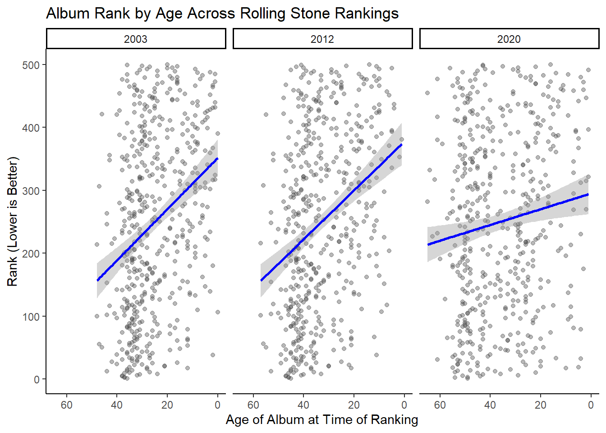
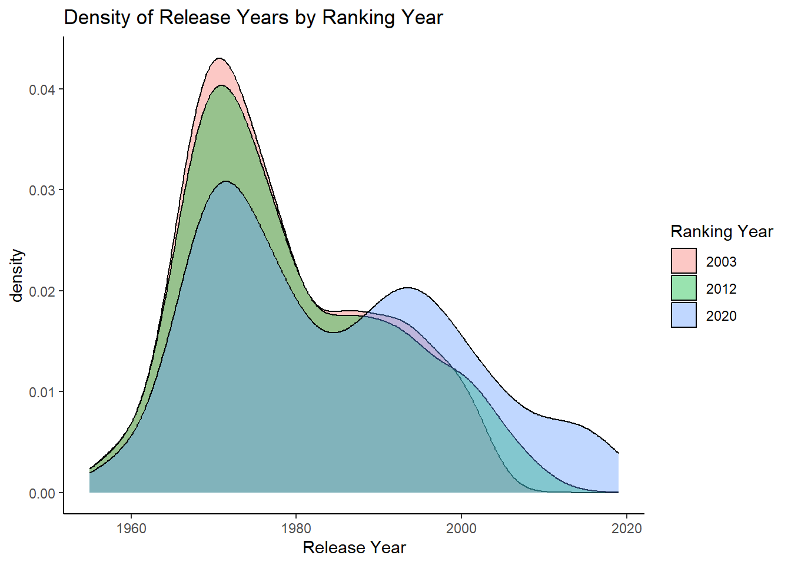

This portfolio is testing certain hypothesis that results from my exploration of the tidytuesday data from Rolling Stone’s album rankins
#libraries
library(tidytuesdayR)## Warning: package 'tidytuesdayR' was built under R version 4.4.3library(tidyverse)## Warning: package 'tidyverse' was built under R version 4.4.3## Warning: package 'ggplot2' was built under R version 4.4.3## Warning: package 'purrr' was built under R version 4.4.3## ── Attaching core tidyverse packages ──────────────────────── tidyverse 2.0.0 ──
## ✔ dplyr 1.1.4 ✔ readr 2.1.5
## ✔ forcats 1.0.0 ✔ stringr 1.5.1
## ✔ ggplot2 3.5.2 ✔ tibble 3.2.1
## ✔ lubridate 1.9.4 ✔ tidyr 1.3.1
## ✔ purrr 1.0.4
## ── Conflicts ────────────────────────────────────────── tidyverse_conflicts() ──
## ✖ dplyr::filter() masks stats::filter()
## ✖ dplyr::lag() masks stats::lag()
## ℹ Use the conflicted package (<http://conflicted.r-lib.org/>) to force all conflicts to become errorslibrary(ggplot2)
library(forcats)
library(lme4)## Warning: package 'lme4' was built under R version 4.4.3## Loading required package: Matrix
##
## Attaching package: 'Matrix'
##
## The following objects are masked from 'package:tidyr':
##
## expand, pack, unpack#data ##rolling_stone
rolling_stone <- readr::read_csv('https://raw.githubusercontent.com/rfordatascience/tidytuesday/main/data/2024/2024-05-07/rolling_stone.csv')## Rows: 691 Columns: 21
## ── Column specification ────────────────────────────────────────────────────────
## Delimiter: ","
## chr (8): sort_name, clean_name, album, genre, type, spotify_url, artist_gen...
## dbl (13): rank_2003, rank_2012, rank_2020, differential, release_year, weeks...
##
## ℹ Use `spec()` to retrieve the full column specification for this data.
## ℹ Specify the column types or set `show_col_types = FALSE` to quiet this message.##rolling_stone_long
rolling_stone_long <- rolling_stone %>%
pivot_longer(
cols = starts_with("rank_"),
names_to = "rs_year",
names_prefix = "rank_",
values_to = "rank"
) %>%
filter(!is.na(rank)) %>%
mutate(rs_year = as.factor(rs_year))#hypothesis
My general hypothesis is that music tastes have changed more between 2012 and 2020 compared to how much it changed between 2003 and 2012–likely driven by the rise of streaming services like Spotify.
First, older albums tend to decrease in rankings overtime, Might analyze something about how from 2003, 2012, and then 2020 there are shifts in which albums are included??? possible changes in release_year or genre or spotify popularity. Hypothesis: there are more changes (i.e, genre, release year, ranking shift, etc.) between 2012 and 2020 compared to 2003 and 2012 and these shifts are driven by the medium that people are using to listen to music
#H1:NewerMusic I am predicting that “newer” music is getting less popular in the rankings. Specifically, it looks like in 2020 the album rankings had far greater variability compared to 2003 and 2012 so that people were liking albums that spanned a more years than before. Of course, part of this is because they have more music available (~10 or ~20 years worth compared to previous rankings) but it also seems to be more than just that.
To test this I will create a new variable in the long-data set that subtracts the release year from the rs_year (so if its a 2003 ranking and released in 1973 the score will be 30). Using three lms, I will get point estimates for how well that predicts rankings in 2003, 2012, and 2020. After that I will compare how well they predict the rankings. Also i will create a new variable that is based on whether the album was released in the last 10 years (from the rank year).
My guess is that there will be more similarity between 2003 and 2012 than 2012 and 2020 with how well that new variable predicts the ranking.
rolling_stone_long <- rolling_stone_long %>%
mutate(
rs_year = as.numeric(as.character(rs_year)), # convert from factor to numeric
age_of_album = rs_year - release_year
) %>%
mutate(release_decade = paste0(floor(release_year / 10) * 10, "s"))##LinearModel:Rank
lm_rank2003 <- lm(rank ~ age_of_album, data = rolling_stone_long %>% filter(rs_year == 2003))
lm_rank2012 <- lm(rank ~ age_of_album, data = rolling_stone_long %>% filter(rs_year == 2012))
lm_rank2020 <- lm(rank ~ age_of_album, data = rolling_stone_long %>% filter(rs_year == 2020))
summary(lm_rank2003)##
## Call:
## lm(formula = rank ~ age_of_album, data = rolling_stone_long %>%
## filter(rs_year == 2003))
##
## Residuals:
## Min 1Q Median 3Q Max
## -305.586 -110.855 -7.165 106.741 293.771
##
## Coefficients:
## Estimate Std. Error t value Pr(>|t|)
## (Intercept) 351.7244 15.0217 23.414 < 2e-16 ***
## age_of_album -4.0693 0.5511 -7.383 6.53e-13 ***
## ---
## Signif. codes: 0 '***' 0.001 '**' 0.01 '*' 0.05 '.' 0.1 ' ' 1
##
## Residual standard error: 137.3 on 498 degrees of freedom
## Multiple R-squared: 0.09867, Adjusted R-squared: 0.09686
## F-statistic: 54.51 on 1 and 498 DF, p-value: 6.531e-13summary(lm_rank2012)##
## Call:
## lm(formula = rank ~ age_of_album, data = rolling_stone_long %>%
## filter(rs_year == 2012))
##
## Residuals:
## Min 1Q Median 3Q Max
## -297.092 -109.844 -4.596 101.511 287.962
##
## Coefficients:
## Estimate Std. Error t value Pr(>|t|)
## (Intercept) 377.815 17.617 21.446 < 2e-16 ***
## age_of_album -3.884 0.504 -7.706 7.1e-14 ***
## ---
## Signif. codes: 0 '***' 0.001 '**' 0.01 '*' 0.05 '.' 0.1 ' ' 1
##
## Residual standard error: 136.7 on 498 degrees of freedom
## Multiple R-squared: 0.1065, Adjusted R-squared: 0.1047
## F-statistic: 59.38 on 1 and 498 DF, p-value: 7.102e-14summary(lm_rank2020)##
## Call:
## lm(formula = rank ~ age_of_album, data = rolling_stone_long %>%
## filter(rs_year == 2020))
##
## Residuals:
## Min 1Q Median 3Q Max
## -269.93 -124.51 2.12 118.64 268.97
##
## Coefficients:
## Estimate Std. Error t value Pr(>|t|)
## (Intercept) 295.1899 16.5797 17.804 < 2e-16 ***
## age_of_album -1.2529 0.4286 -2.923 0.00362 **
## ---
## Signif. codes: 0 '***' 0.001 '**' 0.01 '*' 0.05 '.' 0.1 ' ' 1
##
## Residual standard error: 143.4 on 498 degrees of freedom
## Multiple R-squared: 0.01687, Adjusted R-squared: 0.01489
## F-statistic: 8.544 on 1 and 498 DF, p-value: 0.003625lm_rankcombined <- lm(rank ~ age_of_album * factor(rs_year), data = rolling_stone_long)
summary(lm_rankcombined)##
## Call:
## lm(formula = rank ~ age_of_album * factor(rs_year), data = rolling_stone_long)
##
## Residuals:
## Min 1Q Median 3Q Max
## -305.586 -114.909 -4.025 111.669 293.771
##
## Coefficients:
## Estimate Std. Error t value Pr(>|t|)
## (Intercept) 351.7244 15.2254 23.101 < 2e-16 ***
## age_of_album -4.0693 0.5586 -7.285 5.20e-13 ***
## factor(rs_year)2012 26.0909 23.5261 1.109 0.2676
## factor(rs_year)2020 -56.5345 22.1523 -2.552 0.0108 *
## age_of_album:factor(rs_year)2012 0.1854 0.7585 0.244 0.8069
## age_of_album:factor(rs_year)2020 2.8165 0.6965 4.044 5.53e-05 ***
## ---
## Signif. codes: 0 '***' 0.001 '**' 0.01 '*' 0.05 '.' 0.1 ' ' 1
##
## Residual standard error: 139.2 on 1494 degrees of freedom
## Multiple R-squared: 0.07402, Adjusted R-squared: 0.07092
## F-statistic: 23.89 on 5 and 1494 DF, p-value: < 2.2e-16ggplot(rolling_stone_long, aes(x = age_of_album, y = rank)) +
geom_point(alpha = 0.4, color = "gray30") + # semi-transparent points
geom_smooth(method = "lm", color = "black", se = TRUE) + # linear trend line
facet_wrap(~ rs_year) +
scale_x_reverse() + # lower rank numbers are better (1 = best)
theme_classic()+
labs(
title = "Album Rank by Age Across Rolling Stone Rankings",
x = "Age of Album at Time of Ranking",
y = "Rank (Lower is Better)"
)## `geom_smooth()` using formula = 'y ~ x'
##DecadesBarPlot
rolling_stone_long %>%
ggplot(aes(x = release_year, fill = factor(rs_year))) +
geom_density(alpha = 0.4) +
theme_classic() +
labs(
title = "Density of Release Years by Ranking Year",
x = "Release Year",
fill = "Ranking Year"
) ##KS_testReleaseYear
group_2003 <- rolling_stone_long %>% filter(rs_year == 2003) %>% pull(release_year)
group_2012 <- rolling_stone_long %>% filter(rs_year == 2012) %>% pull(release_year)
group_2020 <- rolling_stone_long %>% filter(rs_year == 2020) %>% pull(release_year)
# Run pairwise KS tests
ks.test(group_2003, group_2012)## Warning in ks.test.default(group_2003, group_2012): p-value will be approximate
## in the presence of ties##
## Asymptotic two-sample Kolmogorov-Smirnov test
##
## data: group_2003 and group_2012
## D = 0.04, p-value = 0.8186
## alternative hypothesis: two-sidedks.test(group_2003, group_2020)## Warning in ks.test.default(group_2003, group_2020): p-value will be approximate
## in the presence of ties##
## Asymptotic two-sample Kolmogorov-Smirnov test
##
## data: group_2003 and group_2020
## D = 0.186, p-value = 6.146e-08
## alternative hypothesis: two-sidedks.test(group_2012, group_2020)## Warning in ks.test.default(group_2012, group_2020): p-value will be approximate
## in the presence of ties##
## Asymptotic two-sample Kolmogorov-Smirnov test
##
## data: group_2012 and group_2020
## D = 0.156, p-value = 1.039e-05
## alternative hypothesis: two-sided##multilevelmodeling
library(lme4)
# Fit a mixed-effects model with random intercepts for rs_year
model <- lmer(rank ~ release_year + rs_year + (1 | rs_year), data = rolling_stone_long)## boundary (singular) fit: see help('isSingular')# Summarize the model results
summary(model)## Linear mixed model fit by REML ['lmerMod']
## Formula: rank ~ release_year + rs_year + (1 | rs_year)
## Data: rolling_stone_long
##
## REML criterion at convergence: 19077.6
##
## Scaled residuals:
## Min 1Q Median 3Q Max
## -2.26281 -0.82261 -0.01061 0.83682 2.11751
##
## Random effects:
## Groups Name Variance Std.Dev.
## rs_year (Intercept) 5.044e-13 7.102e-07
## Residual 1.964e+04 1.401e+02
## Number of obs: 1500, groups: rs_year, 3
##
## Fixed effects:
## Estimate Std. Error t value
## (Intercept) -3170.9860 1106.0442 -2.867
## release_year 2.7233 0.2808 9.699
## rs_year -0.9803 0.5308 -1.847
##
## Correlation of Fixed Effects:
## (Intr) rls_yr
## release_yer -0.319
## rs_year -0.870 -0.190
## optimizer (nloptwrap) convergence code: 0 (OK)
## boundary (singular) fit: see help('isSingular')ranef(model)## $rs_year
## (Intercept)
## 2003 -2.399300e-14
## 2012 5.098512e-14
## 2020 -2.699212e-14
##
## with conditional variances for "rs_year"library(emmeans)## Warning: package 'emmeans' was built under R version 4.4.3## Welcome to emmeans.
## Caution: You lose important information if you filter this package's results.
## See '? untidy'release_date_emmeans <- emmeans(model, pairwise ~ rs_year)
print(release_date_emmeans)## $emmeans
## rs_year emmean SE df lower.CL upper.CL
## 2012 251 3.62 0.99 203 298
##
## Degrees-of-freedom method: kenward-roger
## Confidence level used: 0.95
##
## $contrasts
## contrast estimate SE df z.ratio p.value
## (nothing) nonEst NA NA NA NA
##
## Degrees-of-freedom method: kenward-roger